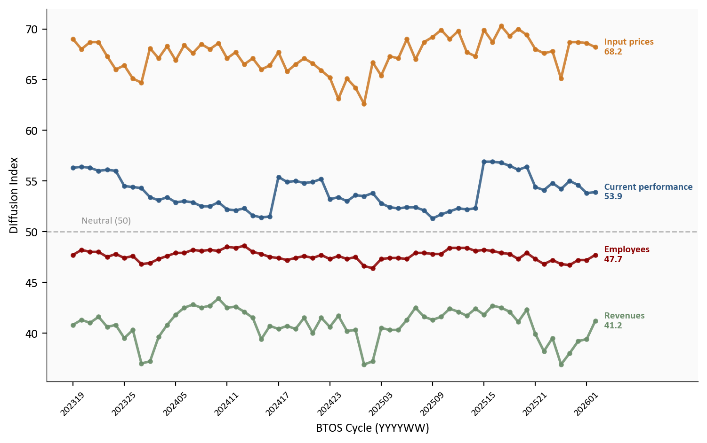
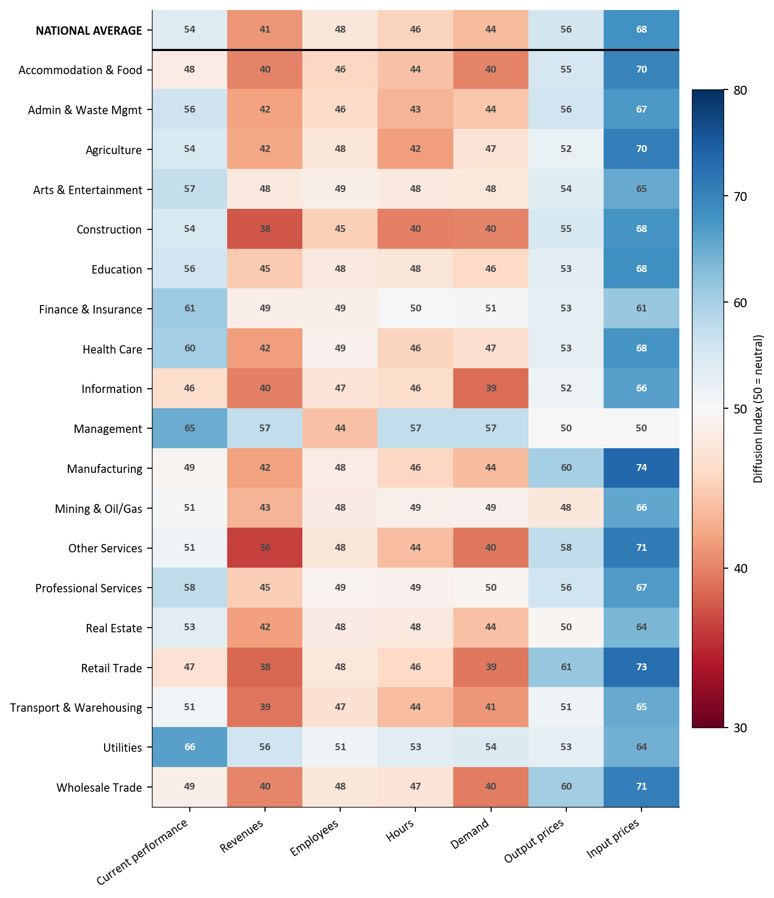
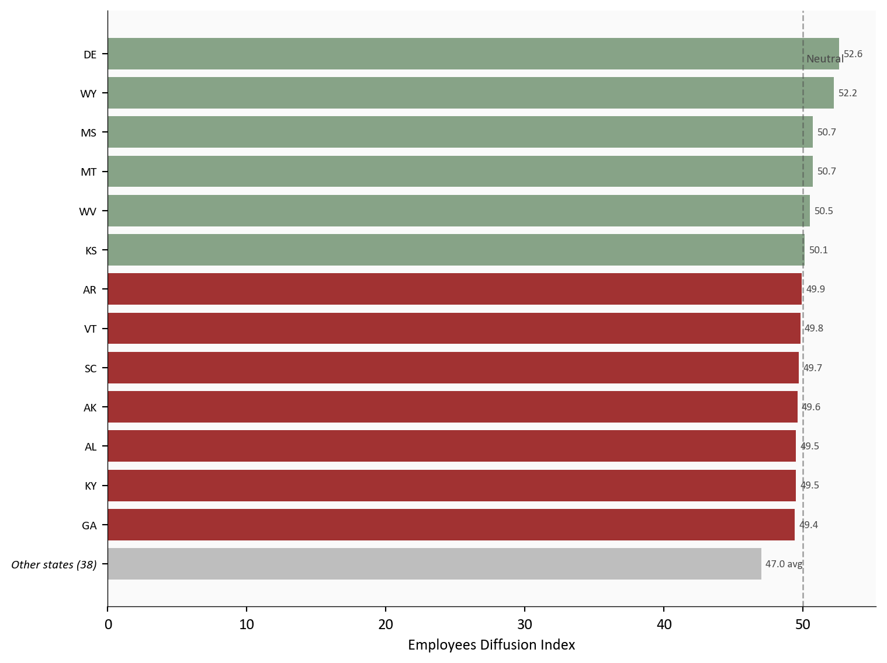
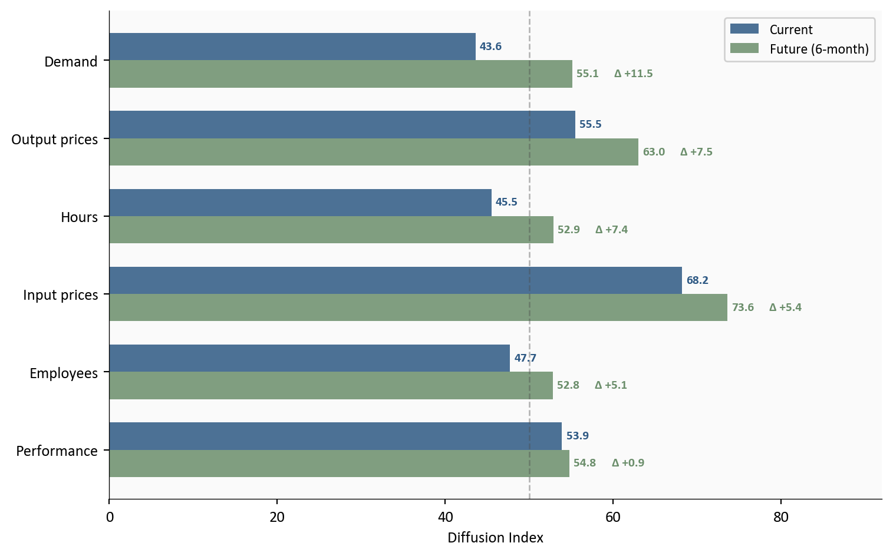

Visualizing the March 2026 BTOS: Stable Revenues, Cautious Hiring
The business survey tells the same story as the jobs miss, from the employer’s side of the table.
economics
data analysis
data visualization
Published
March 22, 2026
Two weeks after the February payroll miss, the Census Bureau’s Business Trends and Outlook Survey1 (BTOS) offers the view from the other side of the hiring decision. The BTOS reports results as diffusion indexes on a 0 to 100 scale: a reading of 50 means no net change, above 50 signals expansion, and below 50 signals contraction (see Reading diffusion indexes below for details, and Limitations for caveats on interpretation). The March 12 release covers the reference period of February 9 to 22, 2026, and the picture it draws is consistent with the jobs data: businesses are not collapsing, but they are pulling back on hiring while input costs stay elevated. Current performance sits at 53.9, just above the neutral line. Revenues came in at 41.2, below 50 for a second consecutive cycle. The employees index landed at 47.7, confirming that the payroll weakness is showing up in how businesses report their own workforce decisions. This is a continuation of the story told by the February jobs miss and the labor market divergence analysis from the previous two weeks: a labor market that is cooling through reduced hiring, not through layoffs.
NoteReproducing this analysis
The Python code used to generate each chart is included in this post. Click on any code block to see the full implementation. The complete data pipeline includes:
01_clean_data.py - Reads raw BTOS XLSX files and outputs clean CSVs
02_compute_stats.py - Computes summary statistics for inline values
BTOS cycle 202605 | Reference period: February 9 to 22, 2026 | Source: U.S. Census Bureau
WarningReading diffusion indexes
All BTOS values are diffusion indexes on a 0 to 100 scale. A reading of 50 means no net change: equal shares of businesses reported increases and decreases. Above 50 signals net expansion; below 50 signals net contraction. A value like 68.2 for input prices means a strong majority of businesses reported rising costs.
1. National Trends Over Time
The time-series view reveals that the current softness is not sudden. The employees index has hovered below 50 for much of the survey’s history, but the gap between input prices (persistently elevated) and revenues (persistently below 50) has been widening. Businesses are absorbing higher costs without proportional revenue growth, and their response has been to hold the line on headcount.
Show code
# =============================================================================# National Time Series: Key Indicators# Source: data/clean/national_index.csv (from National.xlsx, Census BTOS)# =============================================================================key_indicators = ["Current performance", "Revenues", "Employees", "Input prices"]indicator_colors = {"Current performance": COLORS['primary'],"Revenues": COLORS['secondary'],"Employees": COLORS['accent'],"Input prices": COLORS['warning'],}fig, ax = plt.subplots(figsize=(8, 5))for indicator in key_indicators: series = df_nat[df_nat["indicator"] == indicator].copy() series = series.sort_values("cycle") series = series.dropna(subset=["index_value"]) ax.plot(range(len(series)), series["index_value"], color=indicator_colors[indicator], linewidth=2, marker='o', markersize=3, alpha=0.85)# End label last_val = series.iloc[-1]["index_value"] ax.text(len(series) -0.5, last_val,f" {indicator}\n{last_val:.1f}", fontsize=8, color=indicator_colors[indicator], va='center', fontweight='bold')# Neutral reference lineax.axhline(y=50, color=COLORS['neutral'], linestyle='--', linewidth=1, alpha=0.4)ax.text(1, 50.8, 'Neutral (50)', fontsize=8, color=COLORS['neutral'], alpha=0.6)# X-axis: use cycle labels at intervalsall_cycles =sorted(df_nat["cycle"].unique())tick_positions =list(range(0, len(all_cycles), 6))tick_labels = [str(all_cycles[i]) for i in tick_positions if i <len(all_cycles)]ax.set_xticks(tick_positions[:len(tick_labels)])ax.set_xticklabels(tick_labels, fontsize=8, rotation=45)ax.set_xlabel("BTOS Cycle (YYYYWW)")ax.set_ylabel("Diffusion Index")ax.set_xlim(right=len(all_cycles) +8)plt.tight_layout()

Figure 1: National BTOS diffusion indexes for four key indicators, cycles 202319 through 202605. The employees index has remained below 50 (net contraction) for most of the survey’s history, while input prices have stayed well above 50 (net increases). The gap between rising costs and flat revenues explains the hiring caution.
The current performance index at 53.9 suggests that most businesses still view conditions as adequate. But the revenues index at 41.2 tells a more cautious story: more businesses are seeing revenue declines than increases. This mismatch, where businesses report acceptable overall conditions but weakening top-line growth, is characteristic of an economy that has not yet tipped into contraction but has lost forward momentum.
2. The Sector View: Who Is Hiring and Who Is Not
The national employees index of 48 masks significant variation across sectors. Only 2 of 20 sectors report net hiring (index above 50). The remaining 18 are contracting headcount, with Management at the bottom (44) and input-price pressure highest in Manufacturing (74).
Show code
# =============================================================================# Sector Heatmap: Current Indicators# Source: data/clean/sector_index.csv (from Sector.xlsx, Census BTOS)# data/clean/national_index.csv (for national average row)# =============================================================================current_indicators = ["Current performance", "Revenues", "Employees","Hours", "Demand", "Output prices", "Input prices"]sec_latest = df_sec[df_sec["cycle"] == LATEST_CYCLE].copy()# Exclude Multi-sector (XX) for cleaner comparisonsec_latest = sec_latest[sec_latest["sector_name"] !="Multi-sector"]pivot = sec_latest[sec_latest["indicator"].isin(current_indicators)].pivot_table( index="sector_name", columns="indicator", values="index_value")# Reorder columns and sort alphabeticallypivot = pivot[[c for c in current_indicators if c in pivot.columns]]pivot = pivot.sort_index(ascending=True)# Build national average row from national datanat_latest = df_nat[df_nat["cycle"] == LATEST_CYCLE].set_index("indicator")["index_value"]nat_row = pd.DataFrame( {col: [nat_latest.get(col, np.nan)] for col in pivot.columns}, index=["NATIONAL AVERAGE"])# Prepend national average at toppivot = pd.concat([nat_row, pivot])fig, ax = plt.subplots(figsize=(8, 9))# Custom diverging colormap centered at 50from matplotlib.colors import TwoSlopeNormnorm = TwoSlopeNorm(vmin=30, vcenter=50, vmax=80)im = ax.imshow(pivot.values, cmap='RdBu', norm=norm, aspect='auto')# Labelsax.set_xticks(range(len(pivot.columns)))ax.set_xticklabels(pivot.columns, fontsize=9, rotation=35, ha='right')ax.set_yticks(range(len(pivot.index)))y_labels =list(pivot.index)ax.set_yticklabels(y_labels, fontsize=9)# Bold the national average labelax.get_yticklabels()[0].set_fontweight('bold')# Cell text (integers only, bold national row)for i inrange(len(pivot.index)):for j inrange(len(pivot.columns)): val = pivot.values[i, j]if np.isnan(val):continue text_color ='white'ifabs(val -50) >15else COLORS['neutral'] weight ='bold' ax.text(j, i, f"{val:.0f}", ha='center', va='center', fontsize=8, fontweight=weight, color=text_color)# Separator line between national average and sectorsax.axhline(y=0.5, color='black', linewidth=1.5)# Colorbarcbar = plt.colorbar(im, ax=ax, shrink=0.8, pad=0.02)cbar.set_label("Diffusion Index (50 = neutral)", fontsize=9)plt.tight_layout()

Figure 2: Heatmap of current BTOS diffusion indexes by sector for the latest cycle (202605). Darker red indicates values further below 50 (contraction); darker blue indicates values above 50 (expansion). Input prices run hot across nearly every sector, while employees and revenues are broadly below neutral.
The heatmap reveals a consistent pattern: input prices are elevated across nearly every sector, while revenues and employees are broadly below neutral. Construction, manufacturing, and wholesale trade face the sharpest cost-hiring squeeze, where input costs run well above 50 while employee counts contract. The few sectors with employee indexes near or above 50 tend to be service-oriented, consistent with the broader narrative of services-led resilience.
3. State-Level Hiring: Broad Weakness, Few Bright Spots
The geographic breakdown reinforces the national picture. Only 6 states report a net increase in employees, while 45 report net contraction. The weakest hiring is in NV (44.1), while DE leads at 52.6.
Show code
# =============================================================================# State Employees Index: Horizontal Bar Chart# Source: data/clean/state_index.csv (from State.xlsx, Census BTOS)# Show individual bars for states from strongest down to GA,# aggregate all states weaker than GA into a single summary bar.# =============================================================================state_emp = df_state[ (df_state["cycle"] == LATEST_CYCLE) & (df_state["indicator"] =="Employees")].dropna(subset=["index_value"]).copy()state_emp = state_emp.sort_values("index_value", ascending=False)# Split at GA: show top states individually (strongest down to GA),# aggregate everything below GA into one barga_val = state_emp.loc[state_emp["state"] =="GA", "index_value"].values[0]ga_rank = state_emp["index_value"].values.tolist()ga_pos =list(state_emp["state"].values).index("GA")top_states = state_emp.iloc[:ga_pos +1].copy()below_ga = state_emp.iloc[ga_pos +1:]below_avg = below_ga["index_value"].mean()below_count =len(below_ga)# Build combined series (top states descending, then aggregate at bottom)# Reverse so strongest is at the top of the horizontal bar chartplot_labels = [f"Other states ({below_count})"] +list(reversed(top_states["state"].values))plot_values = [below_avg] +list(reversed(top_states["index_value"].values))fig, ax = plt.subplots(figsize=(8, 6))bar_colors = [COLORS['positive'] if v >=50else COLORS['negative']for v in plot_values]# Distinct color for aggregate barbar_colors[0] = COLORS['light']bars = ax.barh(range(len(plot_values)), plot_values, color=bar_colors, alpha=0.8)# Reference line at 50ax.axvline(x=50, color=COLORS['neutral'], linestyle='--', linewidth=1, alpha=0.5)ax.text(50.2, len(plot_values) -1, 'Neutral', fontsize=8, color=COLORS['neutral'], va='top')# Value labelsfor i, val inenumerate(plot_values): label =f"{val:.1f} avg"if i ==0elsef"{val:.1f}" ax.text(val +0.3, i, label, va='center', fontsize=7, color=COLORS['neutral'])ax.set_yticks(range(len(plot_labels)))ax.set_yticklabels(plot_labels, fontsize=8)# Italicize the aggregate labelax.get_yticklabels()[0].set_fontstyle('italic')ax.set_xlabel('Employees Diffusion Index')plt.tight_layout()

Figure 3: Employees diffusion index by state for BTOS cycle 202605, showing the strongest-hiring states individually (top) with all remaining states aggregated (bottom). Only a handful of states report net hiring (index above 50), confirming that the payroll miss reflects a nationwide phenomenon.
The breadth of the weakness matters. When hiring slows in a few large states, it can reflect regional factors. When 45 out of 51 states and DC report net employee contraction, it signals a national phenomenon. This is not a Texas problem or a California problem. It is a broad pullback in hiring appetite that aligns with the caution visible in the sector data.
4. Current Conditions vs. Future Expectations
One of the most useful features of the BTOS is that it asks businesses about both current conditions and their six-month outlook. The comparison between current and future indexes reveals where sentiment is shifting.
Show code
# =============================================================================# Current vs Future: Paired Bar Chart (sorted by delta, descending)# Source: data/clean/national_index.csv (from National.xlsx, Census BTOS)# Only indicators with both current and future readings are included.# =============================================================================pairs = [ ("Current performance", "Future performance"), ("Employees", "Future employees"), ("Hours", "Future hours"), ("Demand", "Future demand"), ("Output prices", "Future output prices"), ("Input prices", "Future input prices"),]nat_latest = df_nat[df_nat["cycle"] == LATEST_CYCLE].set_index("indicator")["index_value"]rows = []for current, future in pairs: cv = nat_latest.get(current, np.nan) fv = nat_latest.get(future, np.nan)if np.isnan(cv) or np.isnan(fv):continue short_label = current.replace("Current ", "").capitalize() rows.append({"label": short_label, "current": cv, "future": fv, "delta": fv - cv})# Sort by absolute delta descending (largest gap at top)rows =sorted(rows, key=lambda r: abs(r["delta"]), reverse=True)# Reverse so largest delta is at the top of the chart (highest y position)rows = rows[::-1]labels = [r["label"] for r in rows]current_vals = [r["current"] for r in rows]future_vals = [r["future"] for r in rows]deltas = [r["delta"] for r in rows]y = np.arange(len(labels))bar_height =0.35fig, ax = plt.subplots(figsize=(8, 5))bars_current = ax.barh(y + bar_height/2, current_vals, bar_height, color=COLORS['primary'], alpha=0.85, label='Current')bars_future = ax.barh(y - bar_height/2, future_vals, bar_height, color=COLORS['secondary'], alpha=0.85, label='Future (6-month)')# Value labels on current bars, delta labels on future barsfor i, (cv, fv, delta) inenumerate(zip(current_vals, future_vals, deltas)): ax.text(cv +0.5, i + bar_height/2, f"{cv:.1f}", va='center', fontsize=8, color=COLORS['primary'], fontweight='bold')# Show future value, then delta to the right of the future bar longer_end =max(cv, fv) delta_color = COLORS['positive'] if delta >=0else COLORS['negative'] ax.text(fv +0.5, i - bar_height/2, f"{fv:.1f}", va='center', fontsize=8, color=COLORS['secondary'], fontweight='bold') ax.text(longer_end +5, i - bar_height/2, f"\u0394{delta:+.1f}", va='center', ha='left', fontsize=8, fontweight='bold', color=delta_color)# Neutral lineax.axvline(x=50, color=COLORS['neutral'], linestyle='--', linewidth=1, alpha=0.4)ax.set_yticks(y)ax.set_yticklabels(labels, fontsize=10)ax.set_xlabel('Diffusion Index')ax.legend(loc='upper right', fontsize=9, framealpha=0.9)ax.set_xlim(right=92)plt.tight_layout()

Figure 4: Comparison of current and future (six-month outlook) BTOS diffusion indexes for cycle 202605, sorted by absolute delta. Businesses expect demand, output prices, hours, and hiring to shift most over the next six months. Every indicator shows a gap between where businesses are now and where they expect to be.
The chart is sorted by the size of the gap between current and future readings, and every indicator shows a meaningful disconnect. Output prices show the largest delta: businesses currently report modest price increases (55.5), but expect to raise prices significantly over the next six months (63.0). The signal is clear: pass-through pricing is coming. Demand tells a similar story in the opposite direction. Current demand sits at 43.6, well into contraction, but businesses expect it to recover to 55.1 over the next two quarters.
Employees show one of the more notable gaps. The current reading of 47.7 confirms net workforce contraction, yet future employees at 52.8 crosses above 50, suggesting businesses see the hiring pullback as temporary. Hours follow the same pattern: current contraction (45.5) gives way to expected stability. Input prices, already the highest current reading at 68.2, are expected to climb further to 73.6. Performance expectations (54.8) tick up only modestly from the current 53.9, the smallest delta of the group.
Taken together, the pattern across all six indicators points to the same conclusion: businesses see current weakness as a trough, not a trend. But the price-side expectations complicate the picture. If businesses follow through on plans to raise output prices while input costs keep climbing, the Fed faces a scenario where the labor market stabilizes but inflation pressures do not fade.
5. AI Adoption: Early Signal
The BTOS also asks businesses whether they used Artificial Intelligence in the past two weeks and whether they expect to in the next six months. Nationally, 18.2% of businesses reported current AI usage, with 21.8% expecting to use AI over the coming six months. The gap between current and expected adoption suggests AI integration is still accelerating, though from a relatively modest base. Among sectors currently using AI, Professional Services leads at 34%, followed by Information (30%) and Finance & Insurance (30%), while goods-producing sectors like Construction (11%) and Manufacturing (14%) trail significantly. This is early data from an experimental survey, but the sector-level variation is worth watching as the BTOS continues to track adoption over time.
What It Means
TipKey takeaway
The hiring pullback is broad and intentional, not distress-driven. Businesses are holding steady on performance while managing elevated input costs by limiting headcount growth. They expect conditions to improve over the next six months, but also expect prices to keep rising.
For the Fed: The BTOS reinforces the bind visible in the CPI and payrolls data. Businesses are not in distress, which argues against emergency cuts, but they are pulling back on hiring, which argues against further tightening. The elevated future price expectations are a complicating signal: businesses themselves anticipate more inflation ahead.
For workers: The future employees index above 50 is a cautiously positive signal. Businesses expect to hire again in coming months. But the current contraction in headcount across 18 of 20 sectors means the near-term job market remains tight from the applicant’s perspective. The risk is not mass layoffs but a hiring freeze that extends longer than expected.
For markets: The BTOS data is consistent with a soft landing trajectory, where growth slows without breaking. Revenue weakness and hiring caution are real, but businesses are not reporting the kind of demand collapse that precedes recession. The forward-looking indexes, while softening, remain above neutral on performance and demand.
Methodology & Data
Data series used in this analysis. All data from the March 12, 2026 BTOS release (cycle 202605).
BTOS is an experimental data product from the Census Bureau with a unit response rate of approximately 11%, which introduces potential nonresponse bias
Diffusion indexes compress complex distributions into single numbers; two sectors with the same index value can have very different underlying response distributions
State-level estimates for smaller states may have higher standard errors; some values are suppressed (marked “S”) for disclosure avoidance
The survey covers the reference period of February 9 to 22, 2026, which may not fully capture the effects of the February payroll miss announced on March 7
Future expectation indexes reflect sentiment at the time of response and are not forecasts; they historically show an optimism bias
Data current as of March 12, 2026 (BTOS cycle 202605). The next BTOS release is scheduled for March 26, 2026.
Footnotes
BTOS: the Business Trends and Outlook Survey, a biweekly experimental survey from the U.S. Census Bureau measuring business conditions across sectors, states, and metro areas using diffusion indexes.↩︎